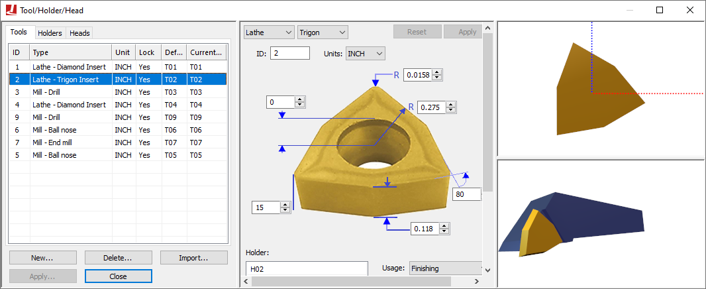

Simulation»Tools/Holders/Heads (Ctrl Alt T)
This menu bar selection provides the ability to add tools and their associated tool-holder definitions to the simulation, as well as to select the active head on a machine that supports multiple exchangeable head attachments.
{kind=link}
Tool and holder definitions are automatically saved in the verification setup (.vsw) file when the program is completed. This setup file will be reused on subsequent runs to quickly reestablish the tooling necessary for an accurate simulation. Tool and holder definitions from another part program can be imported into the current session by pressing the Import button and then selecting the verification setup (.vsw) file of the other part program.
Tooling definitions, like fixture and part definitions, are not a required element for simulation, but if used they add to simulation accuracy and realism. VM attaches solid model representations of holders and tools to the spindle control point (SCP). Once attached, they become a part of the collision detection process.
Details about tool and holder definitions can be found in the “Virtual Machine V26 Users Guide”.
Heads are defined in the model and the sole purpose of this dialog is to select the active head (see “Heads”) below. The middle section of the tool/holder dialog contains the various controls that allow for the creation and modification of tools and holders. The right side of the tool/holder dialog has two viewing panes that are dynamically updated to reflect modifications done in the center section.
The upper right pane is the construction view. Depending on the type of tool or holder, this can either be in a 2D or 3D view format. For the 2D format, hold the left-mouse button down to pan the view, hold and release the right-mouse button to zoom to a selected region, and use the mouse wheel to zoom in and out. Double-click in the view to reset the zoom factor to make the tool or holder fully visible. The standard VM controls apply for navigating a 3D view.
The lower right pane is a 3D assembly pre-view centered on the tool or holder. The standard VM controls apply for navigating a 3D view. Holding and then releasing the right-mouse button while moving horizontally will impart a spin on the object; click once in the window to remove the spin. The button controls at the upper left edge orient the tool in various planes, fit the tool in the window, and show the effect of spindle rotation on the tool. The right-mouse pop-up context menu provides additional functions to aid in viewing the tool or holder.
{kind=link}
When exiting the Tools/Holders/Heads dialog, VM will validate the tool and holder dimensions against the Controller window tool and diameter compensation amounts. If the tool compensation amounts do not agree with the tool definitions, a dialog will appear (as shown at right) listing suggested tool compensation changes highlighted in blue. Pressing OK will automatically adjust the tool compensation for the selected tools.
When running VM with a Manufacturing Extractor, tools and holders will be automatically created to match those used in the CAM manufacturing program.
Tools
Select the Tools tab to add, modify or delete tool definitions. Select the New button to define a new tool. Select an existing tool definition to modify that tool. Select one or more tools and press the Delete button to remove the selected tools.
The tool table lists the following information for each tool:
ID: Identifies the tool using the native form of tool numbering on the controller.
Type: Lists the tool type as defined when the tool was created or last modified.
Unit: Shows the units of measure used for non-angular tool dimensions.
Lock: Not used by CERUN, since it does not have the ability to automatically define tools.
Default pocket: Primarily used when simulating tool changers on models that define tool pocket locations. Double click on this field to choose the pocket where the tool will reside.
Current pocket: The current location of the tool. This field is updated dynamically by VM as tools are loaded. You can manually insert a tool into the spindle by double clicking on this field and selecting the primary tool axis.
Holders
Holder definitions add to simulation accuracy and realism. VM attaches solid model representations of holders and tools to the spindle control point (SCP). Once attached, they become a part of the collision detection process. Holders are associated with tools using the Tools dialog.
Note that the term “Holder” is used by VM to refer to a device used to securely hold the tool in the spindle. The term “Head” is used by VM to refer to detachable spindle units (e.g., a right angle head attachment). The GENER HEAD keyword on a LOAD or TOOLNO command refers to a head attachment, not the tool holder.
Select the Holders tab to add, modify or delete holder definitions. Select the New button to define a new holder. Select an existing holder definition to modify that holder. Select one or more holders and press the Delete button to remove the selected holders. Holders are associated with tools using the Tools dialog.
The holder table lists the following information for each holder:
Name: The name of the holder.
Type: Identifies the sub-type of the holder as being Profile (a holder defined by a 2D profile revolved about the spindle axis) or Generic (a holder defined by one or more STL meshes).
Unit: Defines the units of measure for non-angular holder dimensions.
Heads
A head is a removable device that attaches to the machine and which provides some form of extended machining capability. Common examples of such devices are 90 degree angled heads that mount the tool at an angle, long reach heads that extend the Z axis travel of the tool and heads with one or more controllable rotary axes that provide 4 or 5-axis control of the tool. Head devices (there can be multiple heads) are predefined in the model.
The head table lists the following information for each head defined in the model:
ID: Identifies the head using the native form of head numbering on the controller.
Name: Identifies the head using the name assigned by the creator of the VM model.
Current station: The current location of the head. This field is updated dynamically by VM as heads are loaded. You can manually load or park a head by double clicking on this field and selecting a head attachment point from the drop-down list.
Head attachment points are defined in the model with QUEST. Only one head at a time can reside at any single head attachment point.
A head must be attached to the machine (actually, to a head axis identified as a “head socket”) for it to be active.
Heads do not have to be visible in the model. A head will not be shown if its current selected station is “None”.